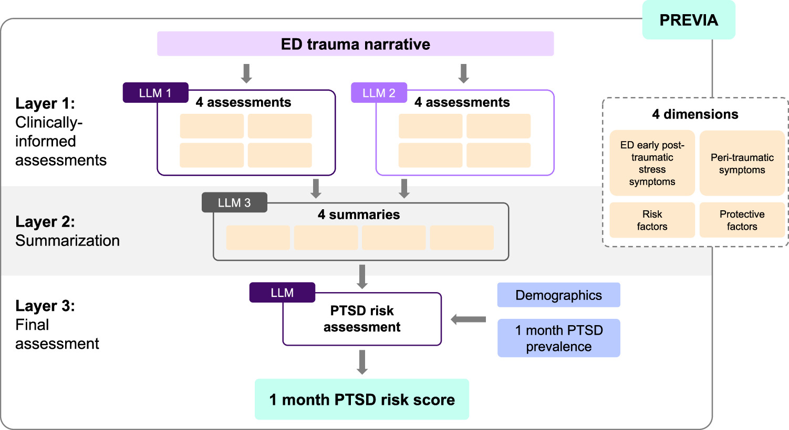
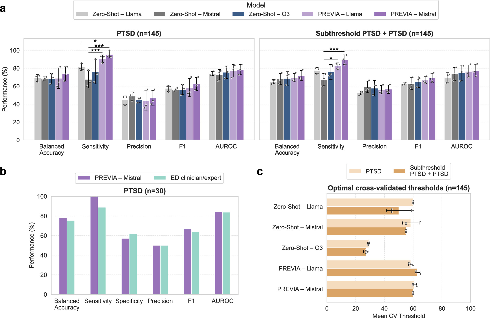
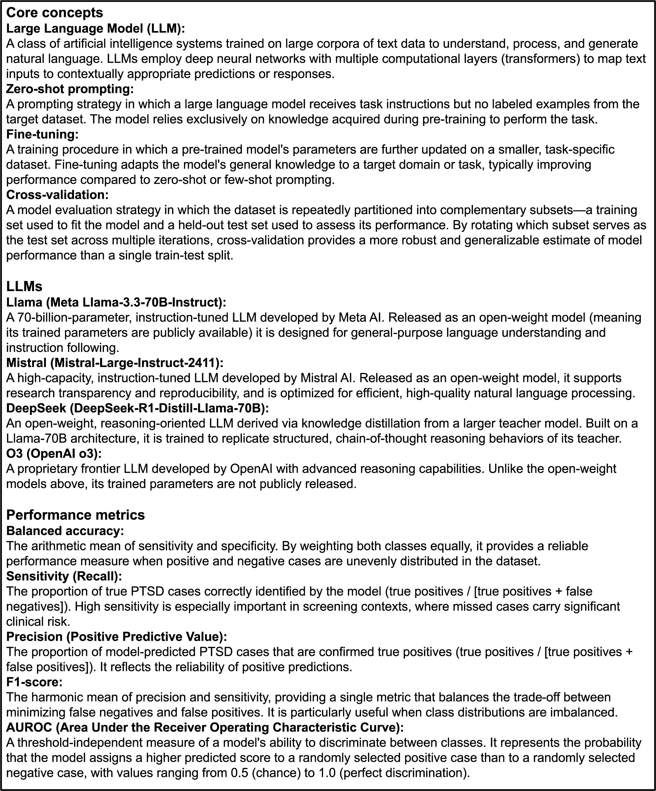
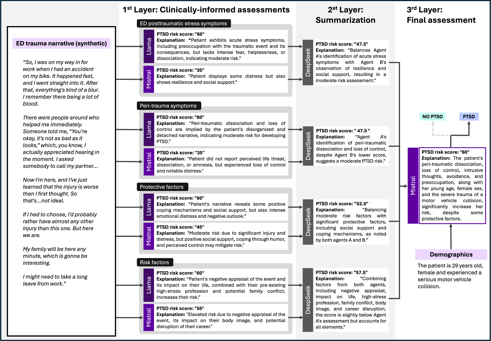
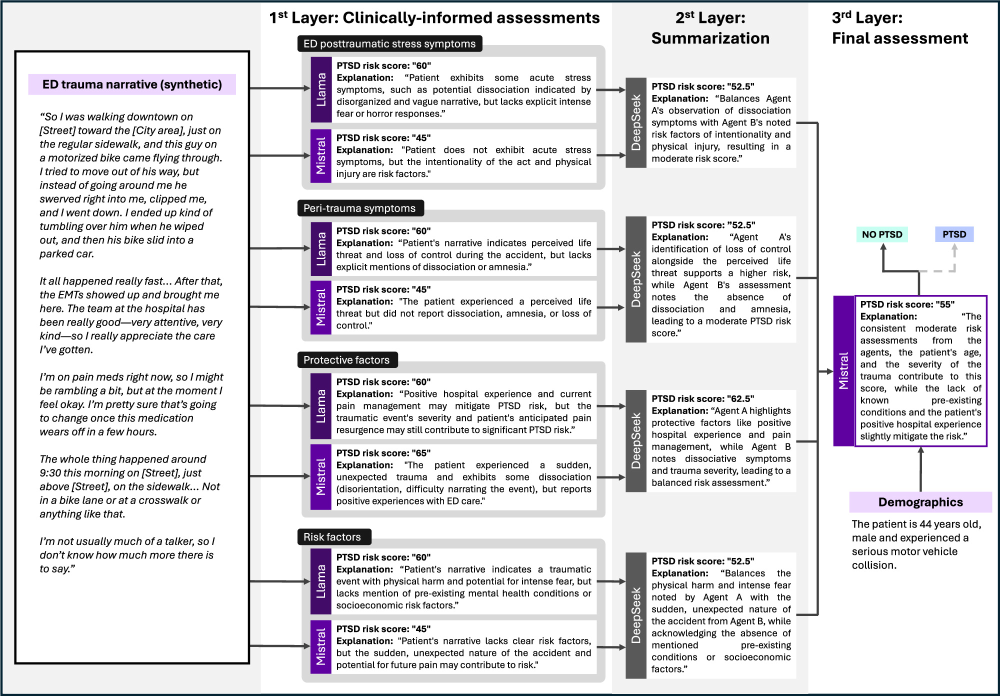

论文资料
LLM ensemble PREVIA predicts future PTSD risk from emergency department trauma narratives with expert-level accuracy
尚未取得可核实的完整摘要或全文
尚未取得可核实的完整摘要或全文。取得完整资料并通过核验后，这个地址会更新为图文解读。
原图未改动。以下图注来自标注的来源，不据此补写摘要未报告的实验结论。
已取得的论文原图


原文图注与出处
A three-layer LLM ensemble for predicting 1-month PTSD risk from ED trauma narratives across four clinically-informed dimensions (ED early post-traumatic stress symptoms, peri-traumatic reactions, risk factors, and protective factors).
Mueller, Victoria et al.
原文图页 · CC BY-NC-ND 4.0

原文图注与出处
a PREVIA (using Mistral or Llama as the final risk assessor) compared with single zero-shot models (Llama, Mistral, and O3) in predicting PTSD and subthreshold PTSD 1-month post-trauma in all 145 patients. Data are presented as mean values ± standard deviations across three cross-validation folds; b PREVIA versus an ED clinician/expert in predicting PTSD 1-month post-trauma in 30 randomly selected patients, and c Optimal cross-validated thresholds derived for each model configuration, showing variability in alignment of probabilistic model outputs with underlying PTSD risk patterns across LLMs in all 145 patients. Data are presented as mean values ± standard deviations across three cross-validation folds; Error bars indicate standard deviations across three cross-validation folds. The data points represent the per-fold predictions; in ( b ), 30 patients were randomly selected and compared against a clinician who rated each case once, so this comparison has no cross-validation folds and is shown without error bars. Statistical significance between LLMs was assessed by a paired hierarchical bootstrap ( B = 5000; two-sided p -values) with Benjamini–Hochberg FDR correction. Asterisks denote FDR-adjusted * p < 0.05, ** p < 0.01, *** p < 0.001.
Mueller, Victoria et al.
原文图页 · CC BY-NC-ND 4.0

原文图注与出处
Definitions of the key technical terms, organized into three groups: core machine learning and natural language processing concepts, the LLMs evaluated in this study, and the performance metrics used to quantify predictive accuracy.
Mueller, Victoria et al.
原文图页 · CC BY-NC-ND 4.0

原文图注与出处
The left panel shows an anonymized first-person account of a motor vehicle-related injury (synthetic version of the original patient transcript). The three panels to the right illustrate how PREVIA progressively transforms this trauma narrative into an interpretable PTSD risk estimate. In Layer 1 (clinically-informed assessments), the narrative is processed through four dimension-specific prompts: early post-traumatic stress symptoms, peri-traumatic reactions, protective factors, and risk factors. Mistral and Llama independently identify relevant narrative segments and convert these into brief clinical interpretations alongside a numerical PTSD risk score. References to acute distress yield elevated symptom scores, while mentions of strong social support produce lower protective factor estimates. Where the models diverge (e.g., in how heavily they weight cosmetic concerns as a risk factor), this disagreement is visible in both their qualitative explanations and numerical scores. In Layer 2 (summarization), DeepSeek integrates the eight Layer 1 assessments by comparing Mistral’s and Llama’s reasoning, emphasizing consensus, such as significant distress alongside strong social support, while down-weighting discordant scores from either model. This yields a synthesized summary for each dimension and a consolidated risk estimate reflecting the balance across all four dimensions. In Layer 3 (final assessment), the dimension-level summaries are combined with basic demographic information and 1-month PTSD prevalence information. Mistral incorporates demographic risk modifiers, such as higher PTSD prevalence among women and younger people, adjusting the overall risk score upward relative to the Layer 2 estimate. The accompanying explanation explicitly attributes part of this increase to the patient’s demographic profile alongside symptom and contextual information.
Mueller, Victoria et al.
原文图页 · CC BY-NC-ND 4.0已取得的论文原图


原文图注与出处
The left panel presents an anonymized first-person account of a pedestrian-motorized scooter collision (synthetic version of the original patient transcript). The three panels to the right illustrate how PREVIA progressively converts this narrative into an interpretable PTSD risk estimate. In Layer 1 (clinically-informed assessments), the narrative is processed through four dimension-specific prompts: early post-traumatic stress symptoms, peri-traumatic reactions, protective factors, and risk factors. Mistral and Llama independently identify relevant segments, including references to pain, shock, event recall, and concerns about future functioning, and convert these into brief clinical interpretations and numerical risk scores. Limited acute distress and preserved event memory yield low-to-moderate scores for early symptoms and peri-traumatic reactions, while good ED care and adequate pain control are interpreted as protective. Both models flag ongoing pain and the sudden, uncontrolled nature of the accident as risk-enhancing, though they diverge in how heavily each model weights potential functional loss. In Layer 2 (summarization), DeepSeek integrates the eight Layer 1 assessments, emphasizing consensus (e.g., modest symptom burden and meaningful protective factors), while down-weighting scores where the two models strongly disagree. This yields synthesized summaries for each dimension and a consolidated risk estimate reflecting a generally low, though non-negligible, risk profile. In Layer 3 (final assessment), Mistral combines the summaries with demographic information and 1-month PTSD prevalence information. Demographic modifiers such as age and trauma type do not substantially elevate risk beyond the Layer 2 estimate, yielding a final classification consistent with “no PTSD”, attributed to the combined influence of protective factors and mild acute symptoms.
Mueller, Victoria et al.
原文图页 · CC BY-NC-ND 4.0